@KellieMeyerNews
📝 原文: President Trump announces his new pick for the next Director of National Intelligence after pushback on Pulte.
🇨🇳 译文: 在反对普尔特之后，特朗普总统宣布了下一任国家情报总监的新人选。

🕒 2026-06-11T18:09:24+00:00
| 来源 | 旧窗口内数量 | 本次新增 | 本次淘汰 | 当前窗口内共有 |
|---|---|---|---|---|
| 推文 + Dawn 新闻 | 0 | 51 | 0 | 51 |
| ARY News | 0 | 0 | 0 | 0 |
注：淘汰数 = 旧窗口内数量 + 本次新增 - 当前窗口内共有

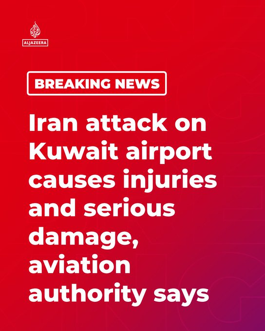
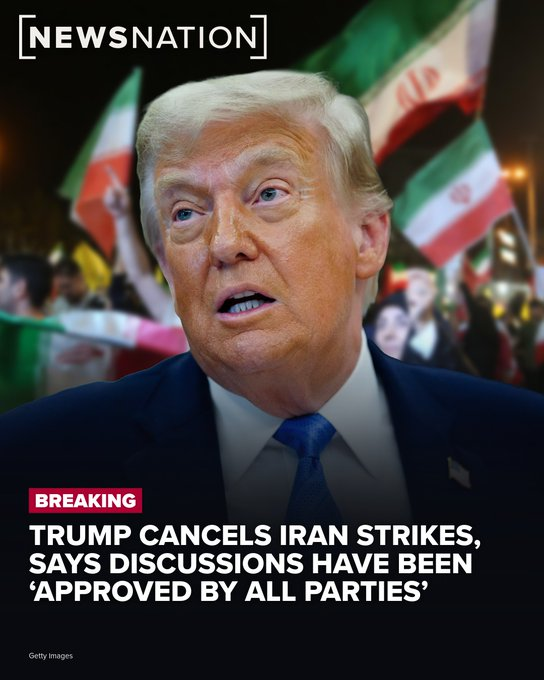
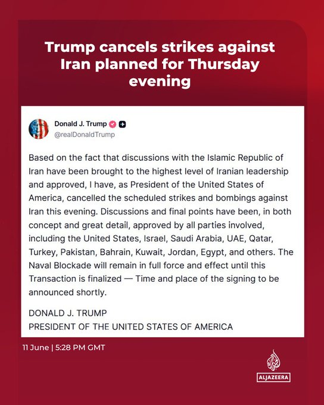
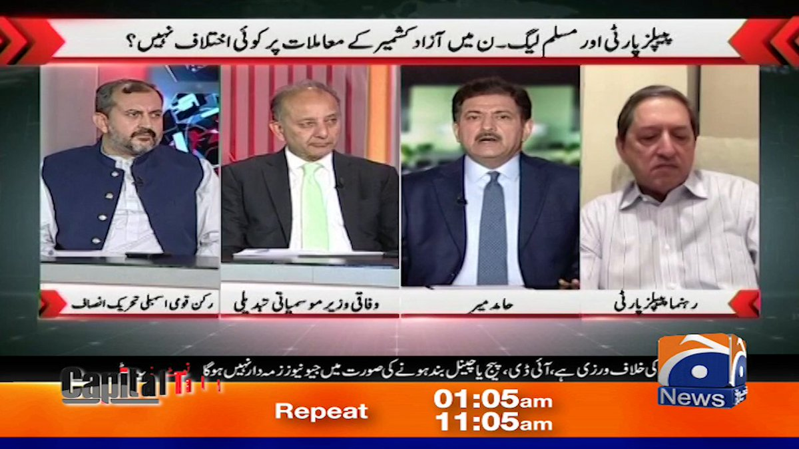
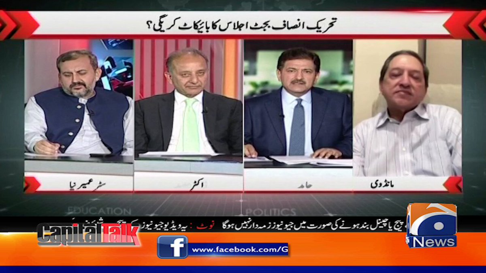


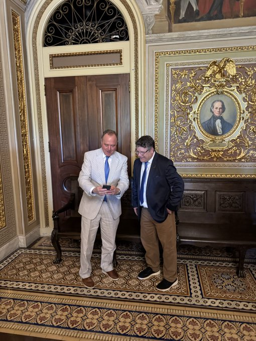
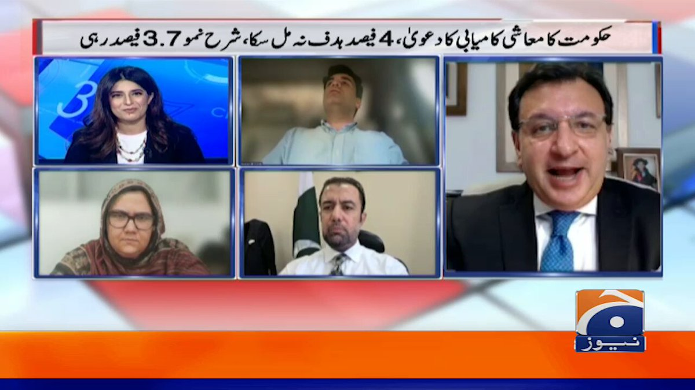
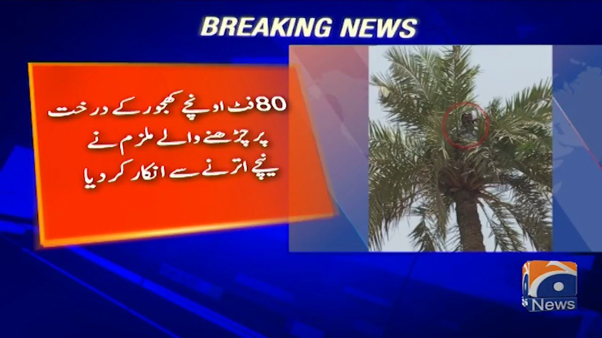
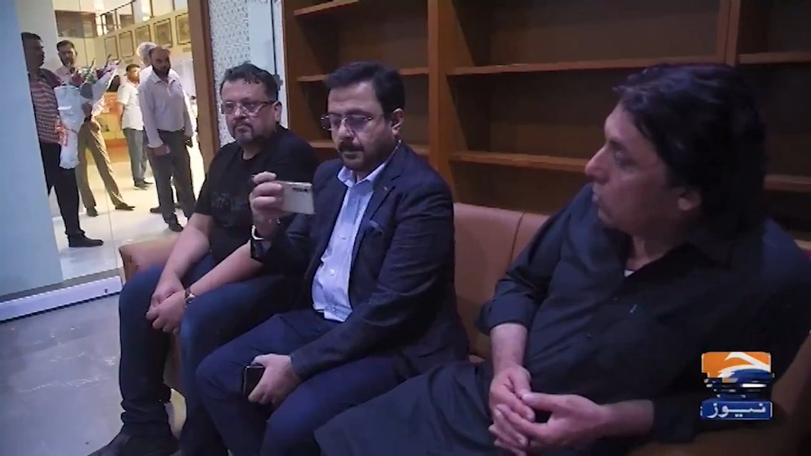
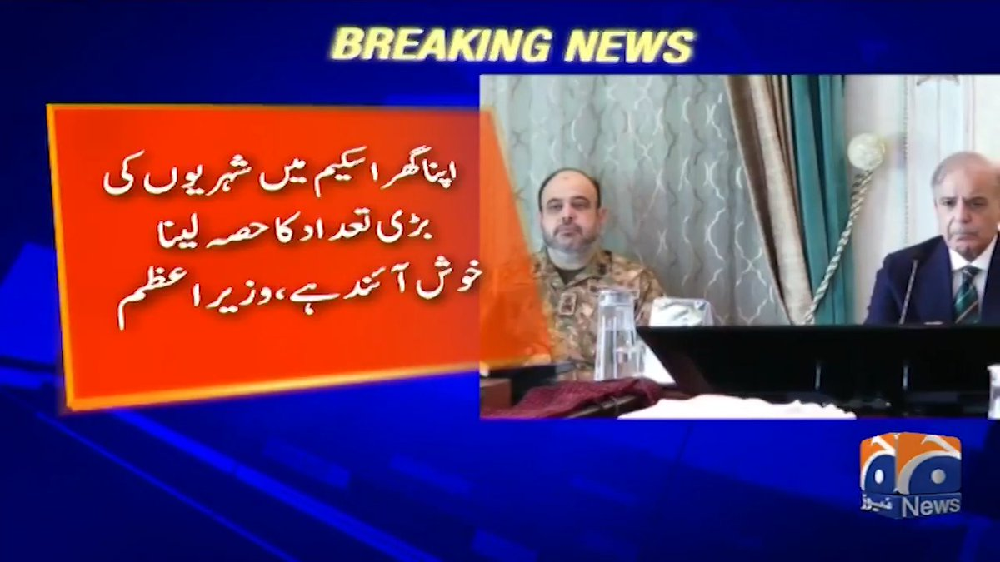
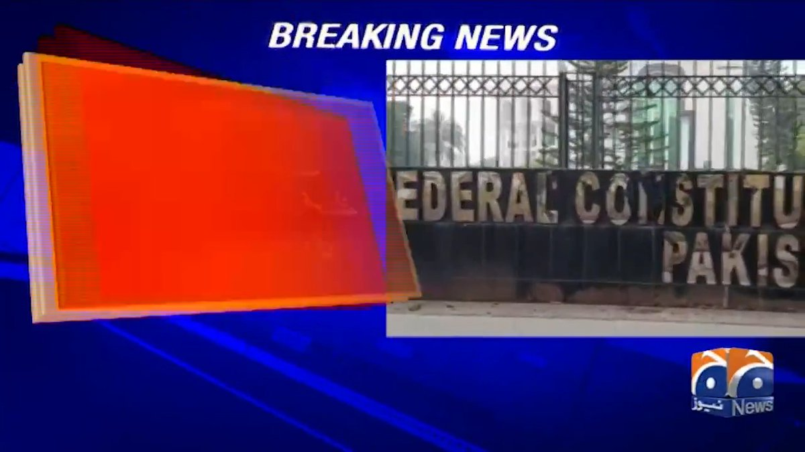
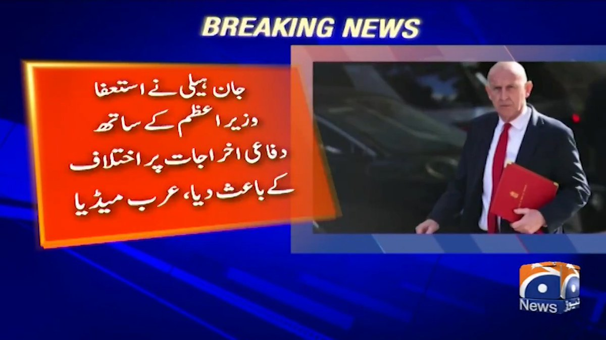
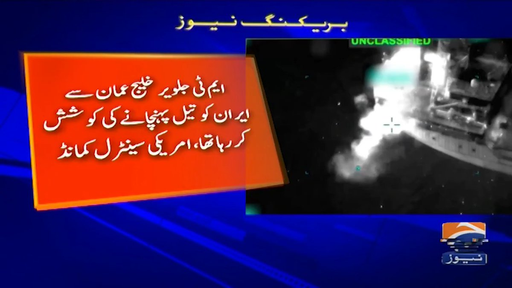


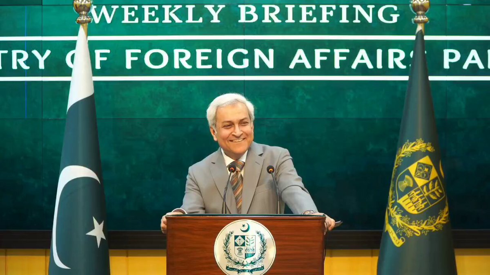


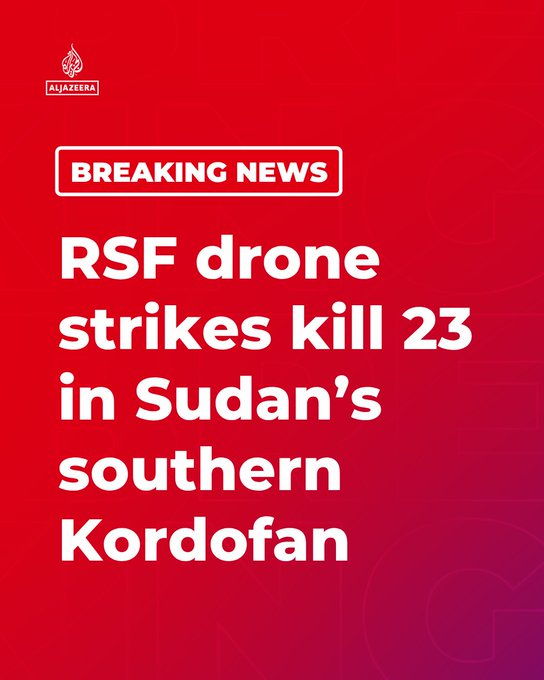


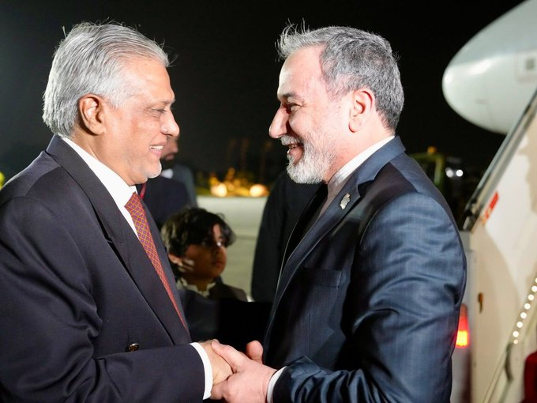
暂无文章。